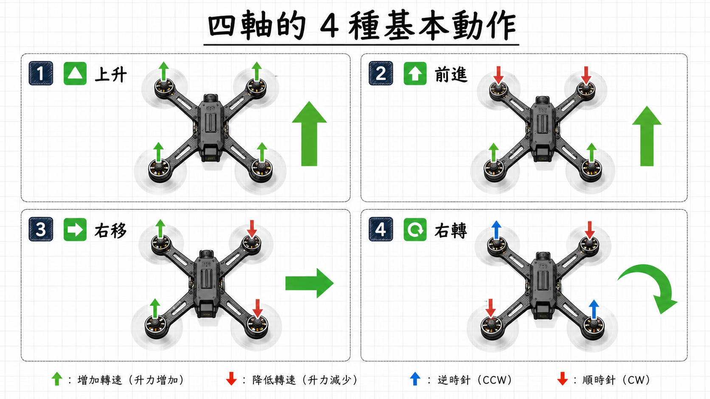

🔼
上升 / 下降
throttle 油門最簡單的一個：4 顆馬達一起加速 → 升力變大 → 整台往上。
反過來，4 顆一起減速 → 升力比重力小 → 整台往下。
配方：M1 ⬆️ M2 ⬆️ M3 ⬆️ M4 ⬆️（全部加速 = 上升）
第一堂看了它能做什麼、第二堂懂了為什麼能飛。現在最後一個問題——怎麼控制它？
第二堂的祕密：4 顆馬達兩兩抵消反扭矩，所以四軸能穩穩懸停。
但只是「停在原地」沒意思——我們要它飛去想去的地方。怎麼辦？
答案：故意打破抵消的平衡。讓某幾顆馬達轉得不一樣，四軸就會傾斜、就會飛走。
四軸只能做 4 種基本動作，每一種都是「馬達轉速不一樣」造成的：

最簡單的一個：4 顆馬達一起加速 → 升力變大 → 整台往上。
反過來，4 顆一起減速 → 升力比重力小 → 整台往下。
後面 2 顆加速、前面 2 顆減速。後面升力比較強 → 機尾抬高 → 機頭往下傾 → 升力斜斜往前推，整台就往前飛了。
後退就反過來，前面加速、後面減速。
一邊 2 顆加速、另一邊 2 顆減速。哪邊升力強，哪邊就被抬高，機身往對邊傾，整台往對邊飛。
右移：左邊加速、右邊減速。左移就反過來。
還記得第二堂的反扭矩兩兩抵消嗎？這個動作就是故意讓抵消失衡。
左轉：讓 CW 正轉馬達 (M1, M4) 加速 → 它們的 CCW 反扭矩變強 → 機身被擰往左 (CCW)。
右轉：讓 CCW 逆轉馬達 (M2, M3) 加速 → 它們的 CW 反扭矩變強 → 機身被擰往右 (CW)。
影片把 4 種動作再用 3D 動畫解一次：
看完原理 → 動手玩玩看 ☕
下一頁有 馬達轉速實驗室 + 飛行模擬器，自己試試看 →